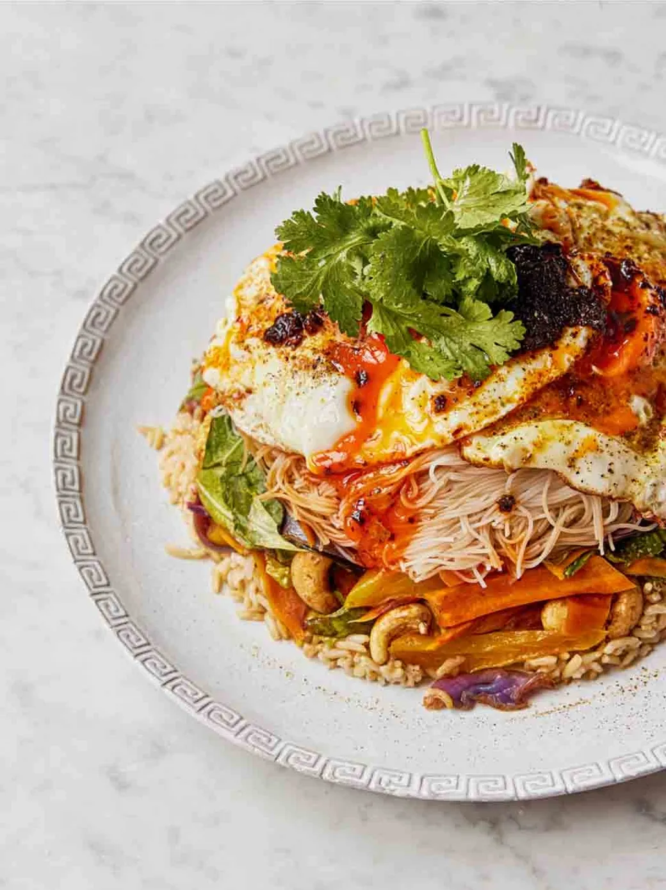

Home
Upside Down Noodles Rice Bowl

Description
Healthy, tasty and hearty - who says you can't have it all? This quick recipe is a great pick me up when you don’t feel like spending too much time in the kitchen but there’s no
compromise on flavor. Bursting with umami as well as freshness this dish is topped off with a fried egg whose runny yolk adds a delicate richness to bring everything together. Why waste
time cooking when you can spend it eating yummy food, and this dish is yummy! Don’t take our word for it, give it a go & you won’t regret it, promise.
Time
18 mins
Ingredients
- 1 nest of vermicelli rice noodles (50g)
- Sesame oil
- 1 x 320g packet of mixed stir-fry veg
- Olive Oil
- 30g unsalted cashew nuts
- 2 tablespoons soy sauce
- 1 x 250g packet of cooked brown rice
- 2 limes
- 2 free range eggs
- Curry powder
- Sichuan chilli oil
- ½ a bunch of coriander (15g)
Steps
- Rehydrate the noodles in a deep 16cm serving bowl according to the packet instructions, then drain, return to the bowl, and toss in a little sesame oil.
- Tip the stir-fry veg into a very hot large non-stick frying pan with a little olive oil and the cashews and fry for 4 minutes, or until just tender, tossing regularly. Season to perfection
with the soy, then pile the veg into the bowl on top of the noodles.
- Crumble the rice into the same pan, squeezing over the juice of 1 lime. Once hot, layer on top of the veg and press down with a fish slice to compact.
- Quickly wipe out the pan and place back on a medium heat. Drizzle in 2 tablespoons of olive oil, crack in the eggs and season with a pinch of sea salt and black pepper, then dust with curry
powder. Cook to your liking, spooning over the hot oil as they cook.
- Turn out the bowl (like a sandcastle!), top with the spiced fried eggs, spoon over Sichuan chilli oil to taste, and pick over the coriander leaves. Squeeze over the remaining lime juice and serve.